Sample Lists of Questions
To Help Determine Community Health Needs and at the Same Time Get People Thinking
FELT NEEDS
What things in your people’s daily lives (living conditions, ways of doing things, beliefs, etc.) do they feel help them to be healthy?
What do people feel to be their major problems, concerns, and needs—not only those related to health, but in general?
HOUSING AND SANITATION
What are different houses made of? Walls? Floors? Are the houses kept clean? Is cooking done on the floor or where? How does smoke get out? On what do people sleep?
Are flies, fleas, bedbugs, rats, or other pests a problem? In what way? What do people do to control them? What else could be done?
Is food protected? How could it be better protected?
What animals (dogs, chickens, pigs, etc.), if any, are allowed in the house?
What problems do they cause?
What are the common diseases of animals? How do they affect people’s health? What is being done about these diseases?
Where do families get their water? Is it safe to drink? What precautions are taken?
How many families have latrines? How many use them properly?
Is the village clean? Where do people put garbage? Why?
POPULATION
How many people live in the community? How many are under 15 years old?
How many can read and write? What good is schooling? Does it teach children what they need to know? How else do children learn?
How many babies were born this year? How many people died? Of what? At what ages? Could their deaths have been prevented? How?
Is the population (number of people) getting larger or smaller? Does this cause any problems?
How often were different persons sick in the past year? How many days was each sick? What sickness or injuries did each have? Why?
How many people have chronic (long-term) illnesses? What are they?
How many children do most parents have? How many children died? Of what? At what ages? What were some of the underlying causes?
How many parents are interested in not having any more children or in not having them so often? For what reasons? (See Family Planning, p. 283.)
w10
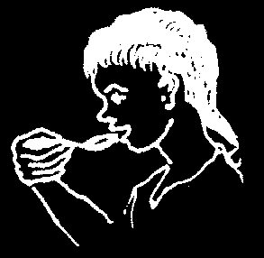


NUTRITION
How many mothers breast feed their babies? For how long? Are these babies healthier than those who are not breastfed? Why?
What are the main foods people eat? Where do they come from?
Do people make good use of all foods available?
How many children are underweight (p. 109) or show signs of poor nutrition? How much do parents and school children know about nutritional needs?
How many people smoke a lot? How many drink alcoholic or soft drinks very often? What effect does this have on their own and their families’ health?
(See p. 148 to 150.)
LAND AND FOOD
Does the land provide enough food for each family?
How long will it continue to produce enough food if families keep growing?
How is farm land distributed? How many people own their land?
What efforts are being made to help the land produce more?
How are crops and food stored? Is there much damage or loss? Why?
HEALING, HEALTH
What role do local midwives and healers play in health care?
What traditional ways of healing and medicines are used?
Which are of greatest value? Are any harmful or dangerous?
What health services are nearby? How good are they? What do they cost? How much are they used?
How many children have been vaccinated? Against what sicknesses?
What other preventive measures are being taken? What others might be taken?
How important are they?
SELF-HELP
What are the most important things that affect your people’s health and well-being—now and in the future?
How many of their common health problems can people care for themselves? How much must they rely on outside help and medication?
Are people interested in finding ways of making self-care safer, more effective and more complete? Why? How can they learn more? What stands in the way?
What are the rights of rich people? Of poor people? Of men? Of women?
Of children? How is each of these groups treated? Why? Is this fair? What needs to be changed? By whom? How?
Do people work together to meet common needs? Do they share or help each other when needs are great?
What can be done to make your village a better, healthier place to live? Where might you and your people begin?
w11
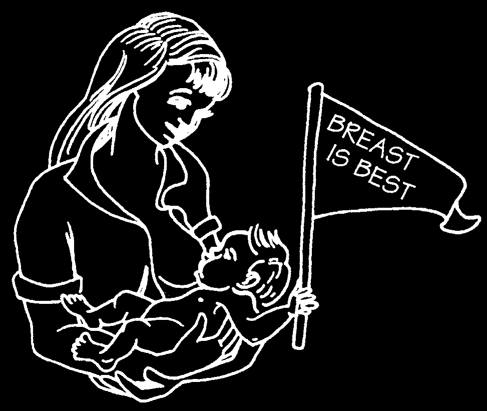
USING LOCAL RESOURCES TO MEET NEEDS
How you deal with a problem will depend upon what resources are available.
Some activities require outside resources (materials, money, or people from somewhere else). For example, a vaccination program is possible only if vaccines are brought in—often from another country.
Other activities can be carried out completely with local resources. A family or a group of neighbors can fence off a water hole or build simple latrines using materials close at hand.
Some outside resources, such as vaccines and a few important medicines, can make a big difference in people’s health. You should do your best to get them. But as a general rule, it is in the best interest of your people to
Use local resources whenever possible.
The more you and your
Encourage people to make people can do for yourselves, the most of local resources.
and the less you have to depend on outside assistance and supplies, the healthier and stronger your community will become.
Not only can you count on local resources to be on hand when you need them, but often they do the best job at the lowest cost. For example, if you can encourage mothers to breastfeed their babies, this will build self-reliance through a top quality local resource— breast milk! It will also prevent needless sickness and death of many babies.
BREAST MILK—A TOP QUALITY
LOCAL RESOURCE—BETTER THAN
In your health work always
ANYTHING MONEY CAN BUY!
remember:
The most valuable resource for the health of the people is the people themselves.
w12


DECIDING WHAT TO DO AND WHERE TO BEGIN
After taking a careful look at needs and resources, you and your people must decide which things are more important and which to do first. You can do many different things to help people be healthy. Some are important immediately.
Others will help determine the future well-being of individuals or the whole community.
In a lot of villages, poor nutrition plays a part in other health problems. People cannot be healthy unless there is enough to eat. Whatever other problems you decide to work with, if people are hungry or children are poorly nourished, better nutrition must be your first concern.
There are many different ways to approach the problem of poor nutrition, for many different things join to cause it. You and your community must consider the possible actions you might take and decide which are most likely to work.
Here are a few examples of ways some people have helped meet their needs for better nutrition. Some actions bring quick results. Others work over a longer time. You and your people must decide what is most likely to work in your area.
POSSIBLE WAYS TO WORK TOWARD BETTER NUTRITION
FAMILY GARDENS
CONTOUR DITCHES
to prevent soil from washing away
ROTATION OF CROPS
Every other planting season plant a crop that returns strength to the soil—like beans, peas, lentils, alfalfa, peanuts or some other plant with seed in pods (legumes).
This year maize
Next year beans w13
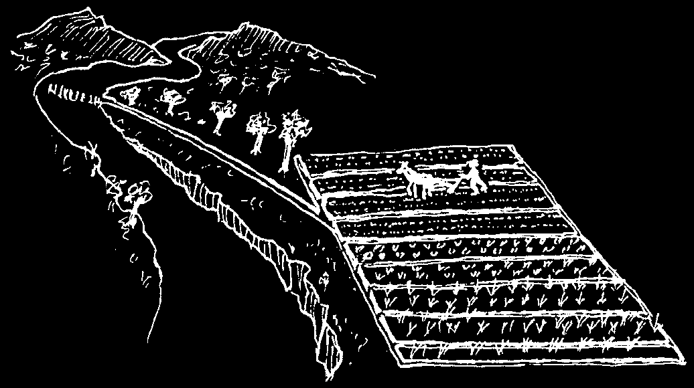


MORE WAYS TO WORK TOWARD BETTER NUTRITION
IRRIGATION OF LAND
FISH BREEDING
BEEKEEPING
NATURAL FERTILIZERS
Compost pile
BETTER FOOD
SMALLER FAMILIES THROUGH
STORAGE
FAMILY PLANNING (p. 283)
Metal sleeves to keep out rats w14
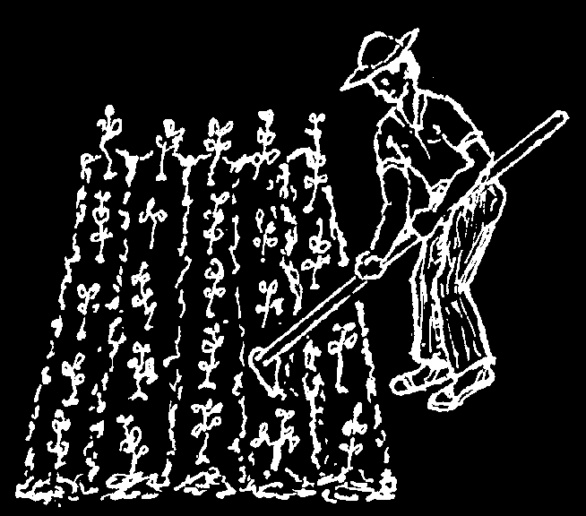
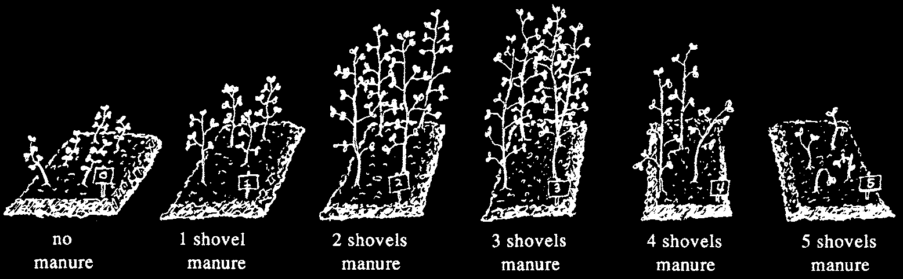
TRYING A NEW IDEA
Not all the suggestions on the last pages are likely to work in your area. Perhaps some will work if changed for your particular situation and resources at hand. Often you can only know whether something will work or not by trying it.
That is, by experiment.
When you try out a new idea, always start small. If you start small and the experiment fails, or something has to be done differently, you will not lose much. If it works, people will see that it works and can begin to apply it in a bigger way.
Start small
Do not be discouraged if an experiment does not work. Perhaps you can try again with certain changes. You can learn as much from your failures as your successes. But start small.
Here is an example of experimenting with a new idea.
You learn that a certain kind of bean, such as soya, is an excellent body-building food. But will it grow in your area? And if it grows, will people eat it?
Start by planting a small patch—or 2 or 3 small patches in different conditions of soil or water. If the beans do well, try preparing them in different ways, and see if people will eat them. If so, try planting more beans in the conditions where you found they grew best. But try out still other conditions in more small patches to see if you can get an even better crop.
There may be several conditions you want to try changing. For example, type of soil, addition of fertilizer, amount of water, or different varieties of seed. To best understand what helps and what does not, be sure to change only one condition at a time and keep all the rest the same.
For example, to find out if animal fertilizer (manure) helps the beans grow, and how much to use, plant several small bean patches side by side, under the same conditions of water and sunlight, and using the same seed. But before you plant, mix each patch with a different amount of manure, something like this:
This experiment shows that a certain amount of manure helps, but that too much can harm the plants. This is only an example. Your experiments may give different results. Try for yourself!
w15

WORKING TOWARD A BALANCE BETWEEN PEOPLE AND LAND
Health depends on many things, but above all it depends on whether people have enough to eat.
Most food comes from the land. Land that is used well can produce more food. A health worker needs to know ways to help the land better feed the people—now and in the future. But even the best used piece of land can only feed a certain number of people. And today, many of the people who farm do not have enough land to meet their needs or to stay healthy.
In many parts of the world, the situation is getting worse, not better. Parents often have many children, so year by year there are more mouths to feed on the limited land that the poor are permitted to use.
Many health programs try to work toward a balance between people and land through 'family planning,’ or helping people have only the number of children they want. Smaller families, they reason, will mean more land and food to go around. But family planning by itself has little effect. As long as people are very poor, they often want many children. Children help with work without having to be paid, and as they get bigger may even bring home a little money. When the parents grow old, some of their children—or grandchildren—will perhaps be able to help care for them.
For a poor country to have many children may be an economic disaster. But for a poor family to have many children is often an economic necessity—especially when many die young. In the world today, for most people, having many children is the surest form of social security they can hope for.
Some groups and programs take a different approach. They recognize that hunger exists not because there is too little land to feed everyone, but because most of the land is in the hands of a few selfish persons. The balance they seek is a fairer distribution of land and wealth. They work to help people gain greater control over their health, land, and lives.
It has been shown that, where land and wealth are shared more fairly and people gain greater economic security, they usually choose to have smaller families. Family planning helps when it is truly the people’s choice. A balance between people and land can more likely be gained through helping people work toward fairer distribution and social justice than through family planning alone.
It has been said that the social meaning of love is justice. The health worker who loves her people should help them work toward a balance based on a more just distribution of land and wealth.
w16
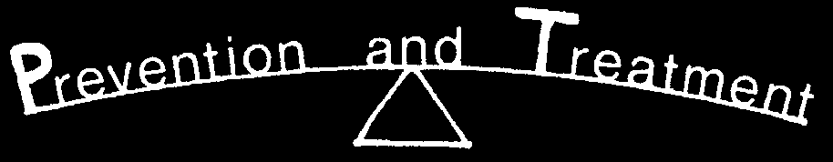
WORKING TOWARD A BALANCE BETWEEN
A balance between treatment and prevention often comes down to a balance between immediate needs and long-term needs.
As a health worker you must go to your people, work with them on their terms, and help them find answers to the needs they feel most. People’s first concern is often to find relief for the sick and suffering. Therefore, one of your first concerns must be to help with healing.
But also look ahead. While caring for people’s immediate felt needs, also help them look to the future. Help them realize that much sickness and suffering can be prevented and that they themselves can take preventive actions.
But be careful! Sometimes health planners and workers go too far. In their eagerness to prevent future ills, they may show too little concern for the sickness and suffering that already exist. By failing to respond to people’s present needs, they may fail to gain their cooperation. And so they fail in much of their preventive work as well.
Treatment and prevention go hand in hand. Early treatment often prevents mild illness from becoming serious. If you help people to recognize many of their common health problems and to treat them early, in their own homes, much needless suffering can be prevented.
Early treatment is a form of preventive medicine.
If you want their cooperation, start where your people are. Work toward a balance between prevention and treatment that is acceptable to them. Such a balance will be largely determined by people’s present attitudes toward sickness, healing, and health. As you help them look farther ahead, as their attitudes change, and as more diseases are controlled, you may find that the balance shifts naturally in favor of prevention.
You cannot tell the mother whose child is ill that prevention is more important than cure. Not if you want her to listen. But you can tell her, while you help her care for her child, that prevention is equally important.
Work toward prevention—do not force it.
Use treatment as a doorway to prevention. One of the best times to talk to people about prevention is when they come for treatment. For example, if a mother brings a child with worms, carefully explain to her how to treat him. But also take time to explain to both the mother and child how the worms are spread and the different things they can do to prevent this from happening (see Chapter 12). Visit their home from time to time, not to find fault, but to help the family toward more effective self-care.
Use treatment as a chance to teach prevention.
w17

SENSIBLE AND LIMITED USE OF MEDICINES
One of the most difficult and important parts of preventive care is to educate your people in the sensible and limited use of medicines. A few modern medicines are very important and can save lives. But for most sicknesses no medicine is needed. The body itself can usually fight off sickness with rest, good food, drinking lots of liquid, and perhaps some simple home remedies.
People may come to you asking for medicine when they do not need any. You may be tempted to give them some medicine just to please. But if you do, when they get well, they will think that you and the medicine cured them. Really their bodies cured themselves.
Instead of teaching people to depend on medicines they do not need, take time to explain why they should not be used. Also tell people what they can do themselves to get well.
This way you are helping people to rely on local resources (themselves), rather than on an outside resource (medicine). Also, you are protecting their health, for there is no medicine that does not have some risk in its use.
Three common health problems for which people too often request medicines they do not need are (1) the common cold, (2) minor cough, and (3) diarrhea.
The common cold is best treated by resting, drinking lots of liquids, and at the most taking aspirin. Penicillin, tetracycline, and other antibiotics do not help at all
(see p. 163).
For minor coughs, or even more severe coughs with thick mucus or phlegm, drinking a lot of water will loosen mucus and ease the cough faster and better than cough syrup. Breathing warm water vapor brings even greater relief
(see p. 168). Do not make people dependent on cough syrup or other medicines they do not need.
For most diarrhea of children, medicines do not make them get well. Many commonly used medicines (neomycin, streptomycin, kaolin-pectin, Lomotil, chloramphenicol) may even be harmful. What is most important is that the child get lots of liquids and enough food (see p. 155 to 156). The key to the child’s recovery is the mother, not the medicine. If you can help mothers understand this and learn what to do, many children’s lives can be saved.
w18
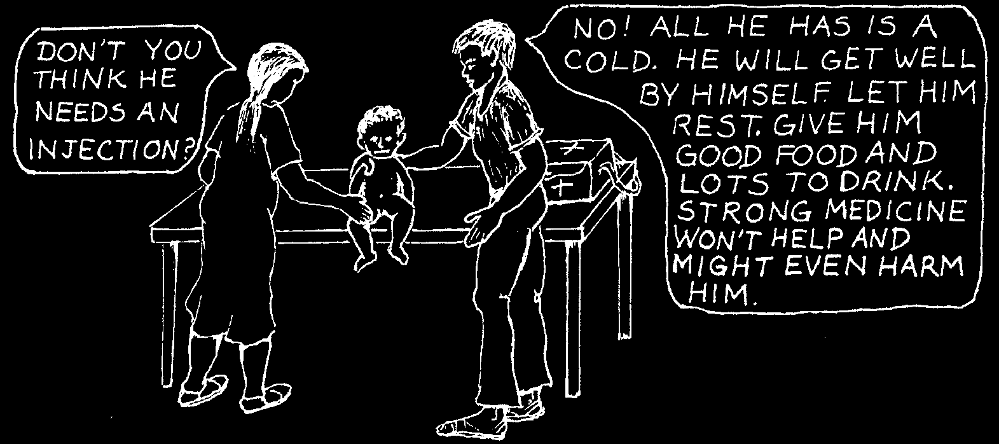
Medicines are often used too much, both by doctors and by ordinary people.
This is unfortunate for many reasons:
• It is wasteful. Most money spent on medicine would be better spent on food.
• It makes people depend on something they do not need (and often cannot afford).
• Every medicine has some risk in its use. There is always a chance that an unneeded medicine may actually do the person harm.
• What is more, when some medicines are used too often for minor problems, they lose their power to fight dangerous sicknesses.
An example of a medicine losing its power is chloramphenicol. The extreme overuse of this important but risky antibiotic for minor infections has meant that in some parts of the world chloramphenicol no longer works against typhoid fever, a very dangerous infection. Frequent overuse of chloramphenicol has allowed typhoid to become resistant to it (see p. 58).
For all the above reasons the use of medicines should be limited.
But how? Neither rigid rules and restrictions nor permitting only highly trained persons to decide about the use of medicines has prevented overuse. Only when the people themselves are better informed will the limited and careful use of medicines be common.
To educate people about sensible and limited use of medicines is one of the important jobs of the health worker.
This is especially true in areas where modern medicines are already in great use.
WHEN MEDICINES ARE NOT NEEDED, TAKE TIME TO EXPLAIN WHY.
For more information about the use and misuse of medicines, see Chapter 6, page 49. For the use and misuse of injections, see Chapter 9, page 65. For sensible use of home remedies, see Chapter 1.
w19
FINDING OUT WHAT PROGRESS HAS BEEN MADE (EVALUATION)
From time to time in your health work, it helps to take a careful look at what and how much you and your people have succeeded in doing. What changes, if any, have been made to improve health and well-being in your community?
You may want to record each month or year the health activities that can be measured. For example:
• How many families have put in latrines?
• How many farmers take part in activities to improve their land and crops?
• How many mothers and children take part in an Under-Fives Program (regular check-ups and learning)?
This kind of question will help you measure action taken. But to find out the result or impact of these activities on health, you will need to answer other questions such as:
• How many children had diarrhea or signs of worms in the past month or year—as compared to before there were latrines?
• How much was harvested this season (corn, beans, or other crops)—as compared to before improved methods were used?
• How many children show normal weight and weight-gain on their Child Health
Charts (see p. 297)—as compared to when the Under-Fives Program was started?
• Do fewer children die now than before?
To be able to judge the success of any activity you need to collect certain information both before and after. For example, if you want to teach mothers how important it is to breastfeed their babies, first take a count of how many mothers are doing so. Then begin the teaching program and each year take another count. This way you can get a good idea as to how much effect your teaching has had.
You may want to set goals. For example, you and the health committee may hope that 80% of the families have latrines by the end of one year. Every month you take a count. If, by the end of six months, only one-third of the families have latrines, you know you will have to work harder to meet the goal you set for yourselves.
Setting goals often helps people work harder and get more done.
To evaluate the results of your health activities it helps to count and measure certain things before, during, and after.
But remember: The most important part of your health work cannot be measured. It has to do with the way you and other people relate to each other; with people learning and working together; with the growth of kindness, responsibility, sharing, and hope. It depends on the growing strength and unity of the people to stand up for their basic rights. You cannot measure these things. But weigh them well when you consider what changes have been made.
w20

TEACHING AND LEARNING TOGETHER— THE HEALTH WORKER AS AN EDUCATOR
As you come to realize how many things affect health, you may think the health worker has an impossibly large job. And true, you will never get much done if you try to deliver health care by yourself.
Only when the people themselves become actively responsible for their own and their community’s health, can important changes take place.
Your community’s well-being depends on the involvement not of one person, but of nearly everyone. For this to happen, responsibility and knowledge must be shared.
This is why your first job as a health worker is to teach—to teach children, parents, farmers, schoolteachers, other health workers—everyone you can.
The art of teaching is the most important skill a person can learn. To teach is to help others grow, and to grow with them. A good teacher is not someone who puts ideas into other people’s heads; he or she is someone who helps others build on their own ideas, to make new discoveries for themselves.
Teaching and learning should not be limited to the schoolhouse or health post.
They should take place in the home and in the fields and on the road. As a health worker one of your best chances to teach will probably be when you treat the sick.
But you should look for every opportunity to exchange ideas, to share, to show, and to help your people think and work together.
On the next few pages are some ideas that may help you do this. They are only suggestions. You will have many other ideas yourself.
TWO APPROACHES TO HEALTH CARE
w21

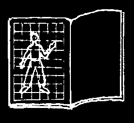
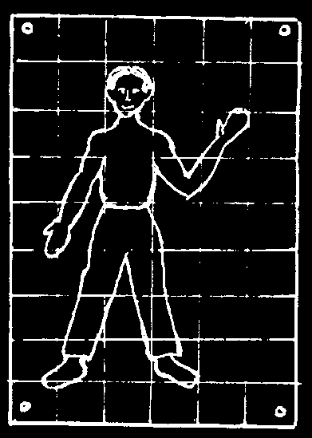
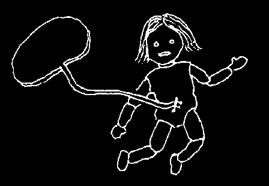
Tools for Teaching
Flannelboards are good for talking with groups because you can keep making new pictures. Cover a square board or piece of cardboard with a flannel cloth. You can place different cutout drawings or photos on it. Strips of sandpaper or flannel glued to the backs of cutouts help them stick to the flannelboard.
Posters and displays. “A picture is worth a thousand words.” Simple drawings, with or without a few words of information, can be hung in the health post or anywhere that people will look at them. You can copy some of the pictures from this book.
If you have trouble getting sizes and shapes right, draw light, even squares in pencil over the picture you want to copy.
Now draw the same number of squares lightly, but larger, on the poster paper or cardboard. Then copy the drawing, square for square.
If possible, ask village artists to draw or paint posters. Or have children make posters on different subjects.
Models and demonstrations help get ideas across.
For example, if you want to talk with mothers and midwives about care in cutting the cord of a newborn child, you can make a doll for the baby. Pin a cloth cord to its belly.
Experienced midwives can demonstrate to others.
Videos on tapes, DVDs, and on the internet are available on different health subjects for many parts of the world.
Battery-operated projectors are also available. But technology can never take the place of a good educator.
A list of addresses where you can send for teaching materials to use for health education in your village can be found on pages 429 to 432.
w22

Other Ways to Get Ideas Across
Story telling. When you have a hard time explaining something, a story, especially a true one, will help make your point.
For example, if I tell you that sometimes a village worker can make a better diagnosis than a doctor, you may not believe me. But if I tell you about a village health worker called Irene, who runs a small nutrition center in Central America, you may understand.
One day a small sickly child arrived at the nutrition center. He had been sent by the doctor at a nearby health center because he was badly malnourished. The child also had a cough, and the doctor had prescribed a cough medicine. Irene was worried about the child. She knew he came from a very poor family and that an older brother had died a few weeks before. She went to visit the family and learned that the older brother had been very sick for a long time and had coughed blood. Irene went to the health center and told the doctor she was afraid the child had tuberculosis. Tests were made, and it turned out that Irene was right.... So you see, the health worker spotted the real problem before the doctor—because she knew her people and visited their homes.
Stories also make learning more interesting. It helps if health workers are good story tellers.
Play acting. Stories that make important points can reach people with even more force if they are acted out. Perhaps you, the schoolteacher, or someone on the health committee can plan short plays or 'skits’ with the schoolchildren.
For example, to make the point that food should be protected from flies to prevent the spread of disease, several small children could dress up as flies and buzz around food.
The flies dirty the food that has not been covered. Then children eat this food and get sick. But the flies cannot get at food in a box with a wire screen front. So the children who eat this food stay well.
The more ways you can find to share ideas, the more people will understand and remember.
w23

Working and Learning Together for the Common Good
There are many ways to interest and involve people in working together to meet their common needs. Here are a few ideas:
1. A village health committee. A group of able, interested persons can be chosen by the village to help plan and lead activities relating to the well-being of the community—for example, digging garbage pits or latrines. The health worker can and should share much of his responsibility with other persons.
2. Group discussions. Mothers, fathers, schoolchildren, young people, folk healers, or other groups can discuss needs and problems that affect health. Their chief purpose can be to help people share ideas and build on what they already know.
3. Work festivals. Community projects such as putting in a water system or cleaning up the village go quickly and can be fun if everybody helps. Games, races, refreshments, and simple prizes help turn work into play. Use imagination.
4. Cooperatives. People can help keep prices down by sharing tools, storage, and perhaps land. Group cooperation can have a big influence on people’s well-being.
5. Classroom visits. Work with the village schoolteacher to encourage healthrelated activities, through demonstrations and play acting. Also invite small groups of students to come to the health center. Children not only learn quickly, but they can help out in many ways. If you give children a chance, they gladly become a valuable resource.
6. Mother and child health meetings. It is especially important that pregnant women and mothers of small children (under five years old) be well informed about their own and their babies’ health needs. Regular visits to the health post are opportunities for both check-ups and learning. Have mothers keep their children’s health records and bring them each month to have their children’s growth recorded
(see the Child Health Chart, p. 297). Mothers who understand the chart often take pride in making sure their children are eating and growing well. They can learn to understand these charts even if they cannot read. Perhaps you can help train interested mothers to organize and lead these activities.
7. Home visits. Make friendly visits to people’s homes, especially homes of families who have special problems, who do not come often to the health post, or who do not take part in group activities. But respect people’s privacy. If your visit cannot be friendly, do not make it—unless children or defenseless persons are in danger.
w24

Ways to Share and Exchange Ideas in a Group
As a health worker you will find that the success you have in improving your people’s health will depend far more on your skills as a teacher than on your medical or technical knowledge. For only when the whole community is involved and works together can big problems be overcome.
People do not learn much from what they are told. They learn from what they think, feel, discuss, see, and do together.
So the good teacher does not sit behind a desk and talk at people. He talks and works with them. He helps his people to think clearly about their needs and to find suitable ways to meet them. He looks for every opportunity to share ideas in an open and friendly way.
Perhaps the most important thing you can do as a health worker is to awaken your people to their own possibilities... to help them gain confidence in themselves. Sometimes villagers do not change things they do not like because they do not try. Too often they may think of themselves as ignorant and powerless.
But they are not. Most villagers, including those who cannot read or write, have remarkable knowledge and skills. They already make great changes in their surroundings with the tools they use, the land they farm, and the things they build.
They can do many important things that people with a lot of schooling cannot.
If you can help people realize how much they already know and have done to change their surroundings, they may also realize that they can learn and do even more. By working together it is within their power to bring about even bigger changes for their health and well-being.
Then how do you tell people these things?
Often you cannot! But you can help them find out some of these things for themselves—by bringing them together for discussions. Say little yourself, but start the discussion by asking certain questions. Simple pictures like the drawing on the next page of a farm family in Central America may help. You will want to draw your own picture, with buildings, people, animals, and crops that look as much as possible like those in your area.
w25

USE PICTURES TO GET PEOPLE TALKING AND THINKING TOGETHER
Show a group of people a picture similar to this and ask them to discuss it. Ask questions that get people talking about what they know and can do. Here are some sample questions:
• Who are the people in the picture and how do they live?
• What was this land like before the people came?
• In what ways have they changed their surroundings?
• How do these changes affect their health and well-being?
• What other changes could these people make? What else could they learn to do? What is stopping them? How could they learn more?
• How did they learn to farm? Who taught them?
• If a doctor or a lawyer moved onto this land with no more money or tools than these people, could he farm it as well? Why or why not?
• In what ways are these people like ourselves?
w26
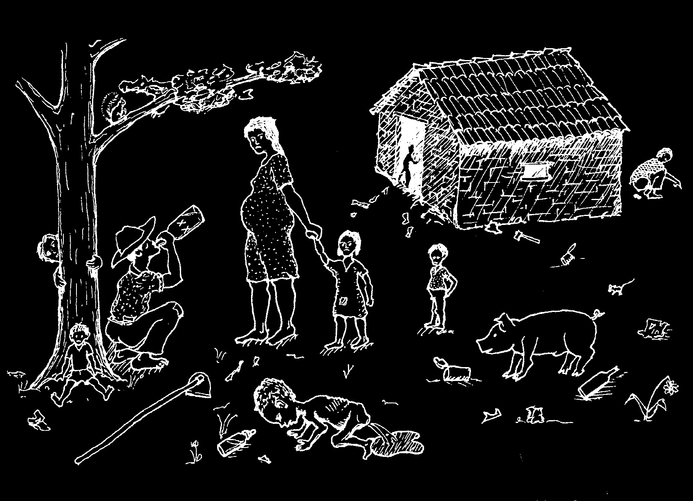
This kind of group discussion helps build people’s confidence in themselves and in their ability to change things. It can also make them feel more involved in their community.
At first you may find that people are slow to speak out and say what they think.
But after a while they will usually begin to talk more freely and ask important questions themselves. Encourage everyone to say what he or she feels and to speak up without fear. Ask those who talk most to give a chance to those who are slower to speak up.
You can think of many other drawings and questions to start discussions that can help people look more clearly at problems, their causes, and possible solutions.
•
What questions can you ask to get people thinking about the different things that lead to the condition of the child in the following picture?
Try to think of questions that lead to others and get people asking for themselves. How many of the causes underlying death from diarrhea (see p. w7)
will your people think of when they discuss a picture like this?
w27

MAKING THE BEST USE OF THIS BOOK
Anyone who knows how to read can use this book in her own home. Even those who do not read can learn from the pictures. But to make the fullest and best use of the book, people often need some instruction. This can be done in several ways.
A health worker or anyone who gives out the book should make sure that people understand how to use the list of Contents, the Index, the Green Pages, and the
Vocabulary. Take special care to give examples of how to look things up. Urge each person to carefully read the sections of the book that will help her understand what may be helpful to do, what could be harmful or dangerous, and when it is important to get help (see especially Chapters 1, 2, 6, and 8, and also the SIGNS
OF DANGEROUS ILLNESS, p. 42). Point out how important it is to prevent sickness before it starts. Encourage people to pay special attention to Chapters 11 and 12, which deal with eating right (nutrition) and keeping clean (hygiene and sanitation).
Also show and mark the pages that tell about the most common problems in your area. For example, you can mark the pages on diarrhea and be sure mothers with small children understand about 'special drink’ (oral rehydration, p. 152). Many problems and needs can be explained briefly. But the more time you spend with people discussing how to use the book or reading and using it together, the more everyone will get out of it.
You as a health worker might encourage people to get together in small groups to read through the book, discussing one chapter at a time. Look at the biggest problems in your area—what to do about health problems that already exist and how to prevent similar problems in the future. Try to get people looking ahead.
Perhaps interested persons can get together for a short class using this book (or others) as a text. Members of the group could discuss how to recognize, treat, and prevent different problems. They could take turns teaching and explaining things to each other.
To help learning be fun in these classes you can act out situations. For example, someone can act as if he has a particular sickness and can explain what he feels.
Others then ask questions and examine him (Chapter 3). Use the book to try to find out what his problem is and what can be done about it. The group should remember to involve the 'sick’ person in learning more about his own sickness—and should end up by discussing with him ways of preventing the sickness in the future. All this can be acted out in class.
Exciting and effective ways to teach about health care are in the book Helping
Health Workers Learn, also available from Hesperian.
As a health worker, one of the best ways you can help people use this book correctly is this: When persons come to you for treatment, have them look up their own or their child’s problem in the book and find out how to treat it. This takes more time, but helps much more than doing it for them. Only when someone makes a mistake or misses something important do you need to step in and help him learn how to do it better. In this way, even sickness gives a chance to help people learn.
w28
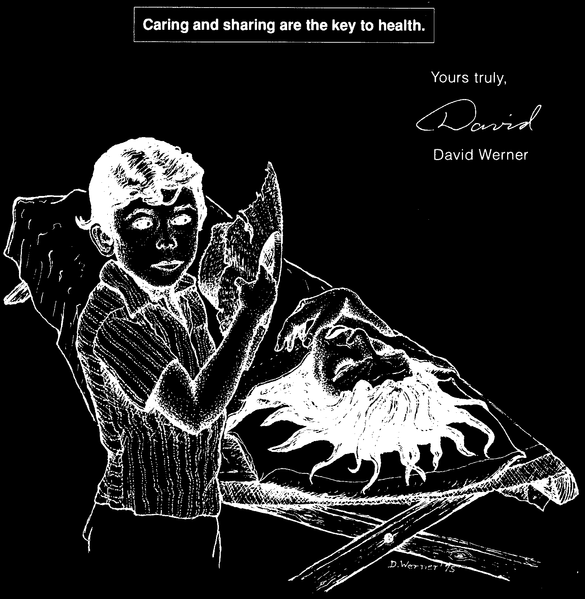
Dear village health worker—whoever and wherever you are, whether you have a title or official position, or are simply someone, like myself, with an interest in the well-being of others—make good use of this book. It is for you and for everyone.
But remember, the most important part of health care you will not find in this book or any other. The key to good health lies within you and your people, in the care, the concern, and appreciation you have for each other. If you want to see your community be healthy, build on these.
w29
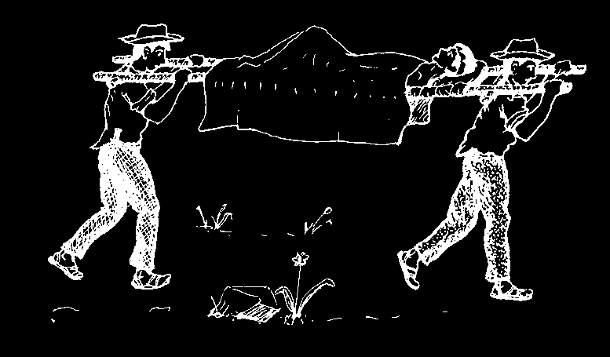
NOTICE
This book is to help people meet most of their common health needs for and by themselves. But it does not have all the answers. In case of serious illness or if you are uncertain about how to handle a health problem, get advice from a health worker or doctor whenever possible.
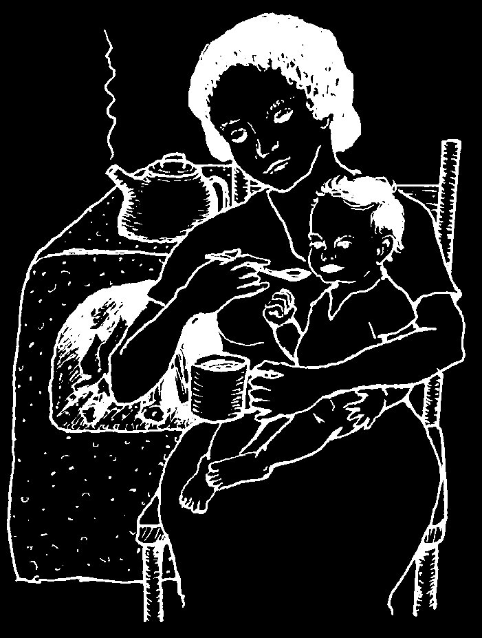
CHAPTER
Home Cures and Popular Beliefs
Everywhere on earth people use home remedies. In some places, the older or traditional ways of healing have been passed down from parents to children for hundreds of years.
Many home remedies have great value. Others have less. And some may be risky or harmful. Home remedies, like modern medicines, must be used with caution.
Try to do no harm.
Only use remedies if you are sure they are safe and know exactly how to use them.
HOME CURES THAT HELP
For many sicknesses, time-tested home remedies work as well as modern medicines— or even better. They are often cheaper. And in some cases they are safer.
For example, many of the herbal teas people use for home treatment of coughs and colds do more good and cause fewer problems than cough syrups and strong medicines some doctors prescribe.
Also, the 'rice water’, teas, or sweetened drinks that many mothers give to babies with diarrhea are often safer and do more good than any modern medicine. What matters most is that a baby with diarrhea get plenty of liquids (see p. 151).
FOR COUGHS, COLDS, AND
COMMON DIARRHEA, HERBAL TEAS
The Limitations
ARE OFTEN BETTER, CHEAPER, AND
of Home Remedies
SAFER THAN MODERN MEDICINES.
Some diseases are helped by home remedies. Others can be treated better with modern medicine. This is true for most serious infections. Sicknesses like pneumonia, tetanus, typhoid, tuberculosis, appendicitis, diseases caused by sexual contact, and fever after childbirth should be treated with modern medicines as soon as possible. For these diseases, do not lose time trying to treat them first with home remedies only.
It is sometimes hard to be sure which home remedies work well and which do not. More careful studies are needed. For this reason:
It is often safer to treat very serious illnesses with modern medicine—following the advice of a health worker if possible.

Old Ways and New
Some modern ways of meeting health needs work better than old ones. But at times the older, traditional ways are best. For example, traditional ways of caring for children or old people are often kinder and work better than some newer, less personal ways.
Not many years ago everyone thought that mother’s milk was the best food for a young baby. They were right! Then the big companies that make canned and artificial milk began to tell mothers that bottle feeding was better. This is not true, but many mothers believed them and started to bottle feed their babies. As a result, thousands of babies have suffered and died needlessly from infection or hunger. For the reasons breast is best, see p. 271.
Respect your people’s traditions and build on them.
For more ideas for building on local traditions, see Helping Health Workers
Learn, Chapter 7.
BELIEFS THAT CAN MAKE PEOPLE WELL
Some home remedies have a direct effect on the body. Others seem to work only because people believe in them. The healing power of belief can be very strong.
For example, I once saw a man who suffered from a very bad headache. To cure him, a woman gave him a small piece of yam, or sweet potato. She told him it was a strong painkiller. He believed her—and the pain went away quickly.
It was his faith in her treatment, and not the yam itself, that made him feel better.
Many home remedies work in this way. They help largely because people have faith in them. For this reason, they are especially useful to cure illnesses that are partly in people’s minds, or those caused in part by a person’s beliefs, worry, or fears.
Included in this group of sicknesses are: bewitchment or hexing, unreasonable or hysterical fear, uncertain 'aches and pains’ (especially in persons going through stressful times, such as teenage girls or older women), and anxiety or nervous worry.
Also included are some cases of asthma, hiccups, indigestion, stomach ulcers, migraine headaches, and even warts.
For all of these problems, the manner or 'touch’ of the healer can be very important. What it often comes down to is showing you care, helping the sick person believe he will get well, or simply helping him relax.
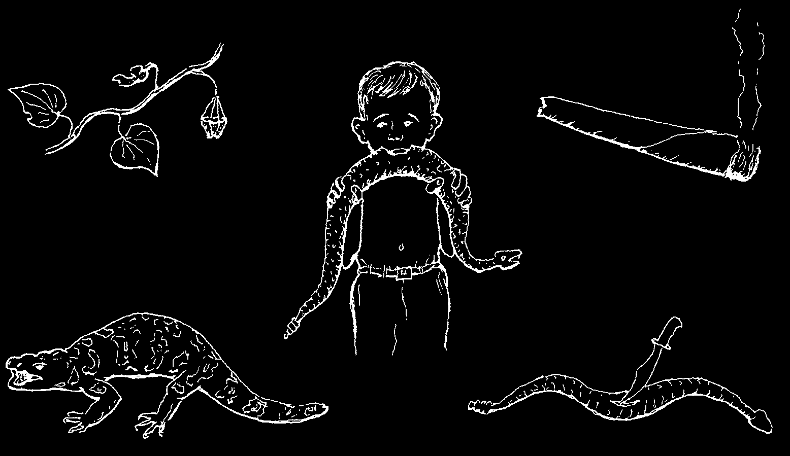
Sometimes a person’s belief in a remedy can help with problems that have completely physical causes.
For example, Mexican villagers have the following home cures for poisonous snakebite:
1. to use 'guaco’ leaves
2. to bite
3. to apply tobacco the snake
4. to apply the skin of
5. to smear the snake’s a poisonous lizard bile on the bite
In other lands people have their own snakebite remedies—often many different ones. As far as we know, none of these home remedies has any direct effect against snake poison. The person who says that a home remedy kept a snake’s poison from harming him at all was probably bitten by a non-poisonous snake!
Yet any of these home remedies may do some good if a person believes in it.
If it makes him less afraid, his pulse will slow down, he will move and tremble less, and as a result, the poison will spread through his body more slowly. So there is less danger!
But the benefit of these home remedies for snakebite is limited. In spite of their common use, many people still become very ill or die. As far as we know:
No home cure for poisonous bites (whether from snakes, scorpions, spiders, or other poisonous animals) has much effect beyond that of the healing power of belief.
For snakebite it is usually better to use modern treatment. Be prepared: obtain
'antivenoms’ or 'serums’ for poisonous bites before you need them (see p. 105).
Do not wait until it is too late.
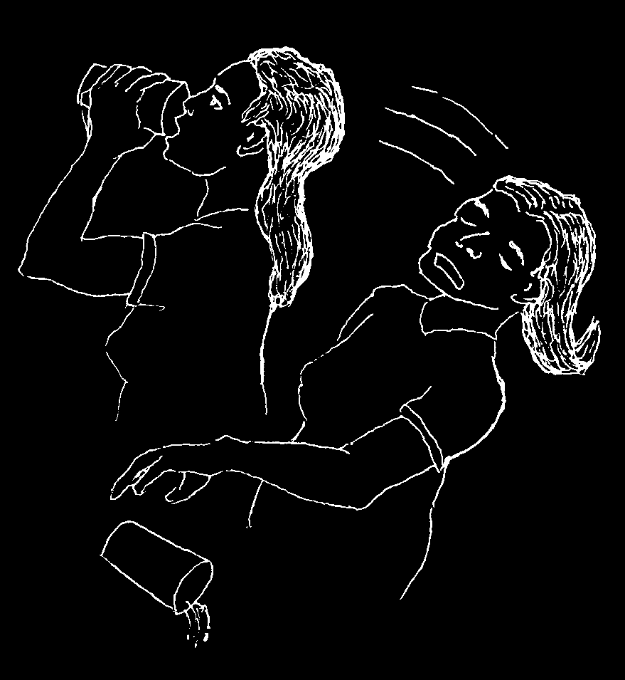
BELIEFS THAT CAN MAKE PEOPLE SICK
The power of belief can help heal people. But it can also harm them. If a person believes strongly enough that something will hurt him, his own fear can make him sick.
For example:
Once I was called to see a woman who had just had a miscarriage and was still bleeding a little. There was an orange tree near her house. So I suggested she drink a glass of orange juice. (Oranges have vitamin C which helps strengthen blood vessels.) She drank it—even though she was afraid it would harm her.
Her fear was so great that soon she became very ill. I examined her, but could find nothing physically wrong.
I tried to comfort her, telling her she was not in danger. But she said she was going to die. At last I gave her an injection of distilled (completely pure)
water. Distilled water has no medical effect. But since she had great faith in injections, she quickly got better.
Actually, the juice did not harm her. What harmed her was her belief that it would make her sick. And what made her well was her faith in injections!
In this same way, many persons go on believing false ideas about witchcraft, injections, diet, and many other things. Much needless suffering is the result.
Perhaps, in a way, I had helped this woman. But the more I thought about it, the more
I realized I had also wronged her; I had led her to believe things that were not true.
I wanted to set this right. So a few days later, when she was completely well, I went to her home and apologized for what I had done. I tried to help her understand that not the orange juice, but her fear had made her so sick. And that not the injection of water, but her freedom from fear had helped her get well.
By understanding the truth about the orange, the injection, and the tricks of her own mind, perhaps this woman and her family will become freer from fear and better able to care for their health in the future. For health is closely related to understanding and freedom from fear.
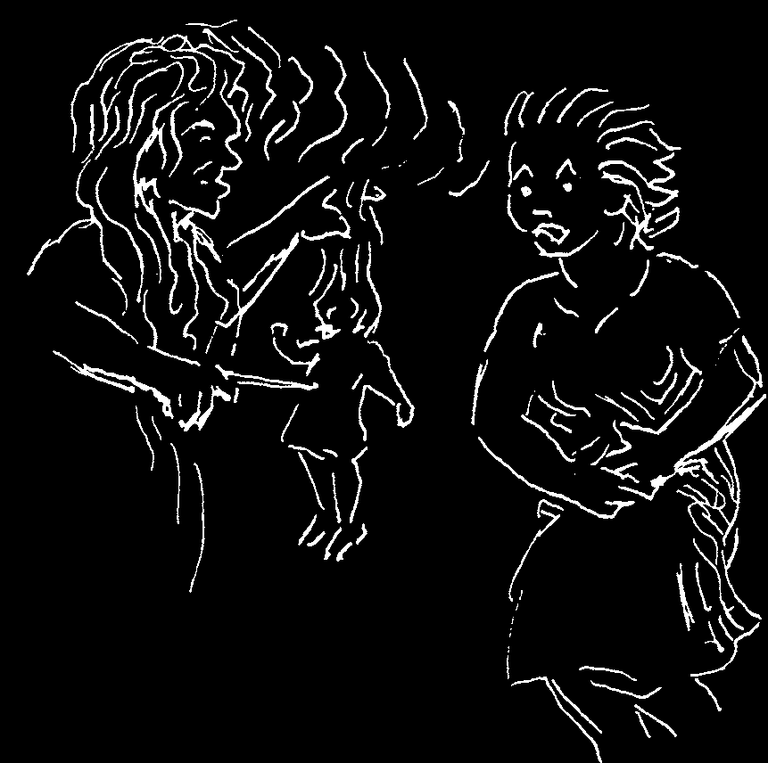
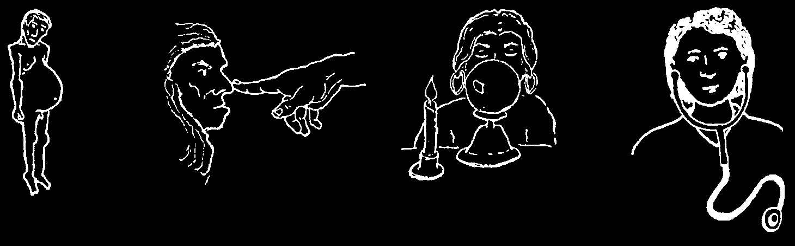
Many things do harm only because people believe they are harmful.
WITCHCRAFT—BLACK MAGIC—AND THE EVIL EYE
If a person believes strongly enough that someone has the power to harm him, he may actually become ill. Anyone who believes he is bewitched or has been given the evil eye is really the victim of his own fears (see Susto, p. 24).
A 'witch’ has no power over other people, except for her ability to make them believe that she has.
For this reason:
It is impossible to bewitch a person who does not believe in witchcraft.
Some people think that they are 'bewitched’ when they have strange or frightening illnesses
(such as tumors of the genitals or cirrhosis of the liver, see p. 328).
Such sicknesses have nothing to do with witchcraft or black magic. Their causes are natural.
Do not waste your money at 'magic centers’ that claim to cure witchcraft.
And do not seek revenge against a witch, because it will not solve anything. If you are seriously ill, go for medical help.
If you have a do not blame do not go to a but ask for strange sickness:
a witch, magic center.
medical advice.